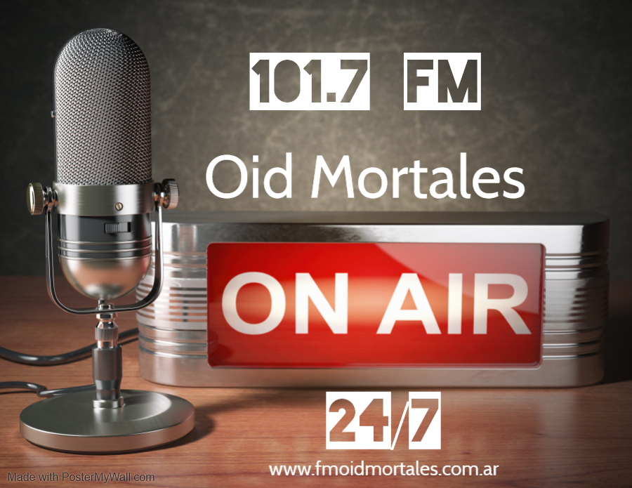
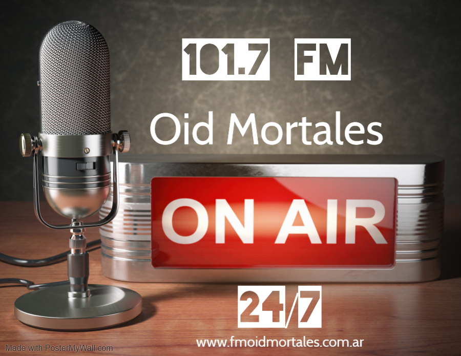
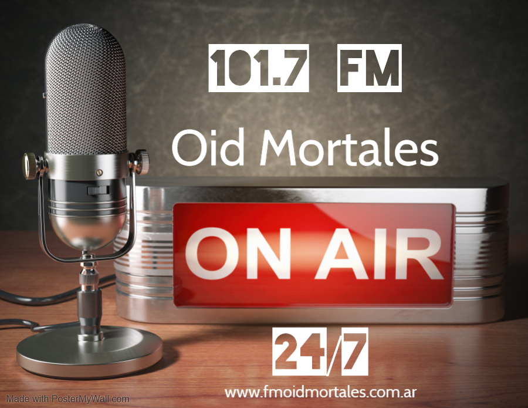

FM Oid Mortales 101.7
Inicio
Programacion
Consultas
Contacto

Videos de Octubre del 2020
Ultimas Noticias ...
Salta suma 195 nuevos casos de coronavirus y son 2.242 los contagios activos
Mauricio Macri reiteró que Juntos por el Cambio ganará en 2023: “Argentina hoy no tiene rumbo”
Alberto Fernández, en Vaca Muerta: "Ahora llegó la hora de poner todo en orden"
Sigue el trabajo de los bomberos para extinguir el foco de incendio en Ongamira
Violento asalto en la Tavella: lo apuntaron con un arma, lo ataron y le robaron


 
